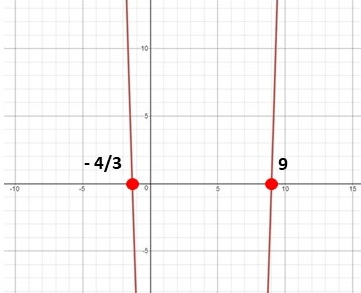

Academic Subjects |
➤ | Math |
➤ | Algebra |
➤ | Quadratic Equations |
➤ | Factoring 3a2 - 23a - 36 |
3a2 + 4a |
factoring quadratic equations |
- 27a - 36 |
a - 9 = 0 |
finding real roots | 3a + 4 |
parabolas |  |